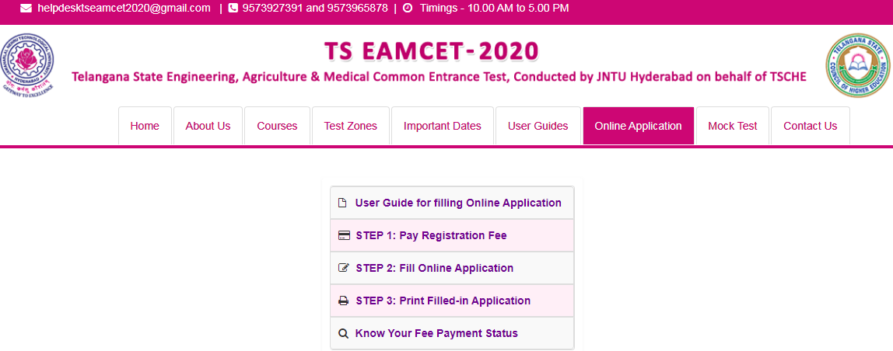

TS EAMCET 2020: Jawaharlal Nehru Technical University (JNTU) will be conducting TS EAMCET 2020 examination on the behalf of Telangana State Council of Higher Education (TSCHE). TS EAMCET stands for Telangana State Engineering, Agriculture and Medical Common Entrance Test. It is a state-level examination which will be held in online mode. Various private and government colleges will grant admission to candidates but within the state of Telangana. Through the valid score, applicants can apply for admission in different fields like engineering, agriculture and medical.
TS EAMCET 2020 Extract
- Applicants who desire to take the exam have to apply by filling an online application form
- Before proceeding to fill an application form, applicants are advised to check the eligibility criteria. Furthermore, the authority will accept applications of only eligible candidates.
- The conducting body will issue an admit card for those candidates who have successfully completed the application process.
- TS EAMCET 2020 examination will be held in the second week of May 2020.
- After the conclusion of the exam, the authority will declare the result
- Candidates will be called to take part in the counseling on the basis of counseling.
Latest Update:
TS EAMCET Application Form has been released and the application form has been started from 24th February 2020. Click here to apply.
TS EAMCET Application form corrections window open till 31st March 2020.

TS EAMCET 2020 Overview
Refer to the table below contains some of the details regarding the TS EAMCET 2020
| Particulars | Specifications |
| Name of the exam | Telangana State Engineering, Agriculture and Medical Common Entrance Test |
| Commonly Known As | TS EAMCET |
| Exam Conducting Body | Jawaharlal Nehru Technical University (JNTU) on behalf of Telangana State Council of Higher Education (TSCHE) |
| Level of the Exam | State Level |
| Mode of Exam | Computer – Based Test |
| Duration | 3 hours |
| Sections in the Exam | Engineering – Physics, Chemistry, and Mathematics Agriculture – Botany, Zoology, Physics, and Chemistry |
| Mode of Application | Online mode |
| Purpose of the Exam | To provide admission in undergraduate programmes in the field of Engineering, Agriculture, and Medical |
TS EAMCET 2020 Schedule
Candidates must be aware of the complete schedule related to the TS EAMCET 2020 examination. They must know the events and their corresponding dates. All the dates will be updated on the official portal of JNTU
| Events | Dates (Announced) |
| Notification Release | 19th February 2020 |
| Online Application form release | 21st February 2020 |
| Last date of application submission without late fee | 30th March 2020 |
| Application correction window open | 31st March – 3rd April 2020 |
| Last date of application submission with Rs.500/- late fee | 6th April 2020 |
| Last date of application submission with Rs.1000/- late fee | 13th April 2020 |
| Last date of application submission with Rs.5000/- late fee | 20th April 2020 |
| Last date of application submission with Rs.10000/- late fee | 27th April 2020 |
| Availability of Admit card | 20th April – 1st May 2020 |
| Exam Date (Revised) | 4th, 5th, 7th May 2020 (Engineering) |
| 9th & 11th May 2020 (Agriculture) | |
| Last date of Objection/Suggestion submission for the answer key | 3rd week of May 2020 |
| Results announcement/Release of final answer key | 4th week of May 2020 |
| The release of Rank card | Last week of May 2020 |
| Starting of Counseling | 2nd week of June 2020 |
TS EAMCET Eligibility Criteria 2020
In order to apply for the exam, aspirants have to fulfill a certain set of requirements. The set of requirements is known as TS EAMCET 2020 eligibility criteria. Any candidate who fails to meet these requirements will not be allowed to fill the application form. Hence they will not be considered eligible to apply and further take the entrance exam.
The eligibility criteria of TS EAMCET 2020 are briefly prescribed beneath. Take a look at different requirements that need to be satisfied by an applying individual
- Nationality: Applicants who hold the citizenship of India can apply. In addition, Overseas Citizen of India (OCI) Card Holder or Persons of Indian Origin (PIO) are also considered eligible to apply for Telangana State EAMCET 2020 examination.
- Domicile: Candidates must have the domicile of Telangana.
- Qualification: Students must have qualified class 12th or equivalent exam form a recognized board.
- Subjects: Applicants must have studied Physics, Chemistry and Mathematics as optional or vocational subjects.
- Percentage: General category candidates must have obtained a minimum of 45% marks while SC/ST Category candidates must have 40% marks.
- Diploma Holders: Diploma holders are eligible to apply.
- Appearing Candidates: Candidates who will be appearing for final year examination can also apply.
TS EAMCET Application Form 2020
Students who will satisfy the eligibility criteria will be able to fill the TS EAMCET Application Form 2020 exam. The application form will be available via online mode through the official website. Applicants can apply for the exam in the third week of March 2020. At first, candidates need to deposit a requisite amount of application fee. The fees can be deposited via online as well as offline mode.
Candidates then have to fill the application form of TS EAMCET 2020. In the application form, students have to fill all the necessary details such as personal, contact and qualification details. Once an application form will be entirely filled, aspirants have to submit it. The last date to submit the Telangana State EAMCET 2020 application form is in the third week of April 2020 tentatively.
Applicants are advised to take a printout of a submitted application form. The completely filled application form then has to be submitted to the invigilator at the time of examination. Applicants need to paste a color photograph and get it attested by a Gazetted Officer.
TS EAMCET Application Fee 2020
Before filling up an application form, aspirants need to pay the TS EAMCET application fee 2020. This fee varies according to the course and category of an individual. Candidates can make the payment via online mode through Net Banking, Debit card or Credit card or at any TS (AP) Centre.
The table below encapsulates the amount of fee required to be paid by different category of candidates for different courses
| Courses | Amount to be paid by General Categories | Amount to be paid by SC/ST categories |
| Engineering | Rs. 400 | Rs. 800 |
| Agriculture | Rs. 400 | Rs. 800 |
| Both Streams (Eng. and Agr.) | Rs. 800 | Rs. 1600 |
TS EAMCET Admit Card 2020
The exam conducting authority will generate the TS EAMCET admit card 2020 in the first or second week of May 2020. The admit card will be made available via online mode. The authority will issue the hall ticket for only those who have filled the application form successfully.
Candidates will be able to observe a number of details regarding an appearing applicant and entrance exam. Apart from these details, the TS EAMCET 2020 hall ticket will contain some important instructions regarding the examination day. Applicants will be required to download the admit card from the official website using their application number and date of birth.
It is necessary for candidates to carry the admit card of TS EAMCET 2020. The authority will use the admit card to verify the identity of an applicant at the time of examination. Only successfully verified students will be granted entry inside the examination hall. Hence an admit card is considered an important document.
TS EAMCET Exam Pattern 2020
Applicants must be familiar with the TS EAMCET Exam Pattern 2020 as knowing it will help them to prepare well. An individual without the knowledge about the examination pattern will be a little panicked and confused which will directly result in failure of good preparation. Thus, the authority advises candidates to check the exam pattern of Telangana State Engineering, Agriculture and Medical Common Entrance Test 2020.
Refer to the exam pattern which is prescribed beneath
- Mode of Exam: The exam will be conducted via online mode i.e it is a computer-based exam
- Duration of Exam: TS EAMCET 2020 examination will be conducted for a duration of 3 hours
- Type of questions: The question paper will contain Multiple Choice Questions (MCQs)
- The number of questions: There will be a total of 160 questions in an entrance exam.
- Sections in the Exam: The exam will be divided into 3 sections. For Engineering, the question paper will be divided into Physics, Chemistry, and Mathematics. For Agriculture, the question paper will be divided into Botany, Zoology, Physics and Chemistry.
- Language: The question paper will be in English and Telugu literature.
- Marking Scheme: 1 mark will be awarded for each correct response and there will be no negative marking for any incorrect response.
The table below shows the number of questions from each section and distribution of marks
For Engineering Course
| Sections | Number of Questions | Distribution of Marks |
| Physics | 40 | 40 |
| Chemistry | 40 | 40 |
| Mathematics | 80 | 80 |
| Total | 160 | 160 |
For Agriculture Course
| Sections | Number of Questions | Distribution of Marks |
| Zoology | 40 | 40 |
| Botany | 40 | 40 |
| Physics | 40 | 40 |
| Chemistry | 40 | 40 |
| Total | 160 | 160 |
TS EAMCET Syllabus 2020
Candidates who will be appearing for the entrance exam must check the TS EAMCET Syllabus 2020 first. The syllabus will then help candidates to prepare for the exam. An individual must go through the entire syllabus in order to spend time on the specific topics which are mentioned in it. All applicants must prepare as per the prescribed syllabus which will eventually let candidates to not waste time on some other random topics.
TS EAMCET 2020 syllabus will be based on the concepts of class 11 and 12th level. The syllabus for Engineering and Agriculture will be different and cover topics from various subjects. The exam conducting body has not yet declared the syllabus. Candidates will be able to check the syllabus of TS EAMCET 2020 form the official website when it will be released.
Physics
- Physical World
- Units And Measurements
- Motion In A Straight Line
- Motion In A Plane
- Laws Of Motion
- Work, Energy, And Power
- Systems Of Particles And Rotational Motion
- Oscillations
- Mechanical Properties Of Solids
- Mechanical Properties Of Fluids
- Thermal Properties Of Matter
- Thermodynamics
- Kinetic Theory
- Waves
Chemistry
- Atomic Structure
- Classification Of Elements And Periodicity In Properties
- Chemical Bonding And Molecular Structure
- States Of Matter: Gases And Liquids
- Stoichiometry
- Thermodynamics
Mathematics
- Algebra
- Trigonometry
- Vector-Algebra
- Measures Of Dispersion
- Probability
TS EAMCET Recommended Books 2020
It is the basic requirement of candidates to have a good set of books in order to prepare for the Telangana State EAMCET 2020 exam. Some of the names of books are listed below
- For Physics: EAMCET Physics by Arihant Publications, H.C. Verma Physics, and D.C Pandey
- For Chemistry: J.D.Lee for Organic Chemistry and OP Tandon for Physical Chemistry
- For Mathematics: Deepthi series for Mathematics.
Apart from all the above recommended books, candidates can take the help from NCERT textbooks of class 11th and 12th.
TS EAMCET Preparation Tips 2020
Candidates must have some tips to prepare for the exam that will turn out to be beneficial for them. Here are some of the TS EAMCET Preparation Tips 2020 that can be used by students to prepare for the exam:
- Know the exact exam pattern, syllabus and marking scheme
- Refer to relevant study material in order to prepare for the exam.
- Have a good set of books which contain every single topic of the syllabus
- Make a time table and study according to it
- Have proper time management for each subject
- Focus on the subject which seems to be tough.
- Practice as many sample papers and previous year’s questions papers as possible.
- Make short notes of every subject while preparing for the exam
- Take enough rest and follow a healthy diet.
TS EAMCET Answer Key 2020
After the conclusion of an entrance exam, JNTU will publish a provisional TS EAMCET Answer Key 2020. An answer key will be available in the third week of May 2020. With the help of an answer key, candidates will be able to estimate the approximate score and predict their performance even before the declaration of result. Applicants can access the answer key of TS EAMCET 2020 from the official website which will be in the form of a pdf.
If candidates find an error or they will not be satisfied with the published answer key then the authority provides a chance to them for raising objections against it. The last date to raise objections is in the third week of May 2020. The authority will accept all the objections and then publish the final TS EAMCET 2020 answer key in the fourth week of May 2020 tentatively.
TS EAMCET Result 2020
Applicants will be able to access and view the TS EAMCET Result 2020 via online mode. The result will be available on the official website in the fourth week of May 2020. The candidate will be required to download the result by logging in and entering the application number and password. TSEAMCET 2020 result will be on the basis of score secured by an applicant in the examination.
TS EAMCET Cutoff 2020
The minimum qualifying score required by an applicant is known as the TS EAMCET Cutoff 2020. The minimum percentage score for TS EAMCET will be 25% of the maximum score which will be considered for the ranking. The qualifying score for SC category applicants is not yet decided by TSCHE.
Students who will obtain a score more than the prescribed qualifying score will be given a rank on the basis of the normalization score. The weightage of the normalization score will be 75% and that of the qualifying score is 25%.
TS EAMCET Merit List 2020
Jawaharlal Nehru Technical University will prepare a TSEAMCET Merit List 2020 for those who will meet the prescribed criteria. The merit list will contain names of candidates who will score equal to or above the released cutoff. The authority will place applicants in the merit list based on the rank secured by them. Candidates will be able to check this list on the official website. Applicants whose names will be present in the merit list will be further invited to attend the counseling process.
TS EAMCET Tie-Breaking Criteria
In case two or more candidates secure the same rank then the authority takes into consideration the tie-breaking criteria. The criteria will be used to place candidates with a higher rank in the merit list. The tie-breaking criteria are mentioned below:
- The normalized score will be allotted higher rank in the merit list
- If the tie continues, the normalized score in Mathematics will be given a higher rank
- If the tie persists then the normalized score in Physics will be provided a higher rank
- An applicant with the percentage of aggregate score obtained in the examination will be given a higher rank.
- If the tie stills exist then the candidates with older age will be allotted a higher rank in the merit list
TS EAMCET Counselling 2020
TSCHE will organize the TS EAMCET Counselling 2020 for students whose names will be mentioned on the merit list. The counseling will be conducted via online mode and it will commence in the second week of June 2020 tentatively. At the time of counseling, aspirants have to fill the choice of institute and course as per their preference. Once the choices will be filled, the authority will allot seats to aspirants depending upon the choices filled, rank obtained and availability of seats. If candidates accept the allotted seat, then they will be required to report at the allocated centers for verification of documents. While reporting candidates are advised to carry original as well photocopies of their documents.
TS EAMCET – Documents Required at Time of Counselling
The following documents need to be carried along by an applicant when reporting at the allotted center
- Class 10th mark sheet
- Class 12th mark sheet
- TS EAMCET Admit Card 2020
- Category Certificate
- Proof of date of Birth
TS EAMCET Exam Centres 2020
There are a number of TS EAMCET Exam Centres 2020 where the authority will conduct the exam. Given below is the list containing names of exam centers but it is according to the last year. This list has been divided into two parts where the one is for the state of Telangana and the other is for the Andhra Pradesh.
Exam Centres in Telangana
- Nizamabad
- Kodad
- Karimnagar
- Warangal
- Adilabad
- Mahbubnagar
- Nalgonda
- Siddipet
- Tarnaka
- Gandipet
- Moinabad
- Khammam
Exam Centres in Andhra Pradesh
- Kurnool
- Tirupati
- Visakhapatnam
- Vijayawada
We hope the detailed article on TS EAMCET 2020 is helpful. If you have any doubts regarding this article or TS EAMCET 2020, drop your comments in the comment section below and we will get back to you as soon as possible.